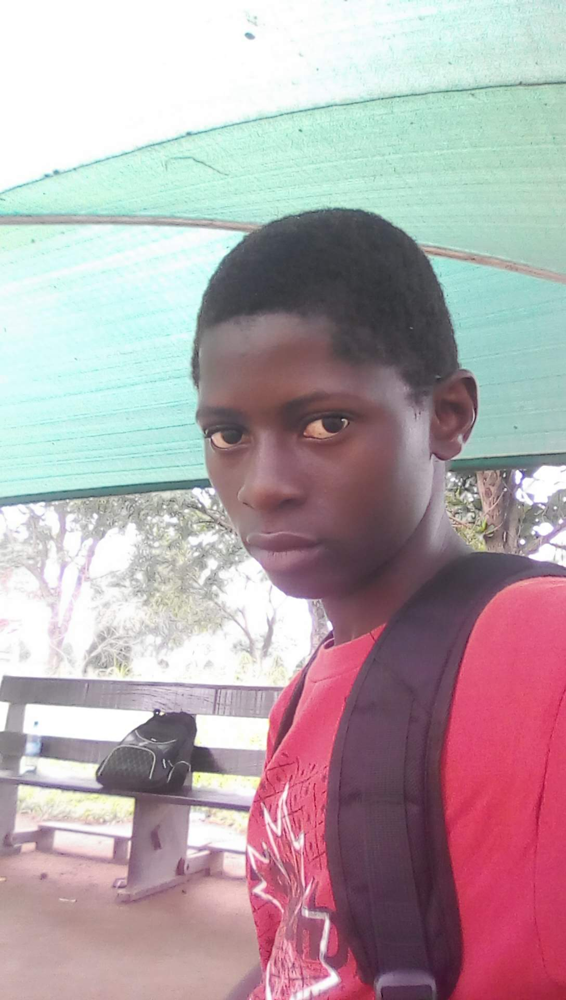
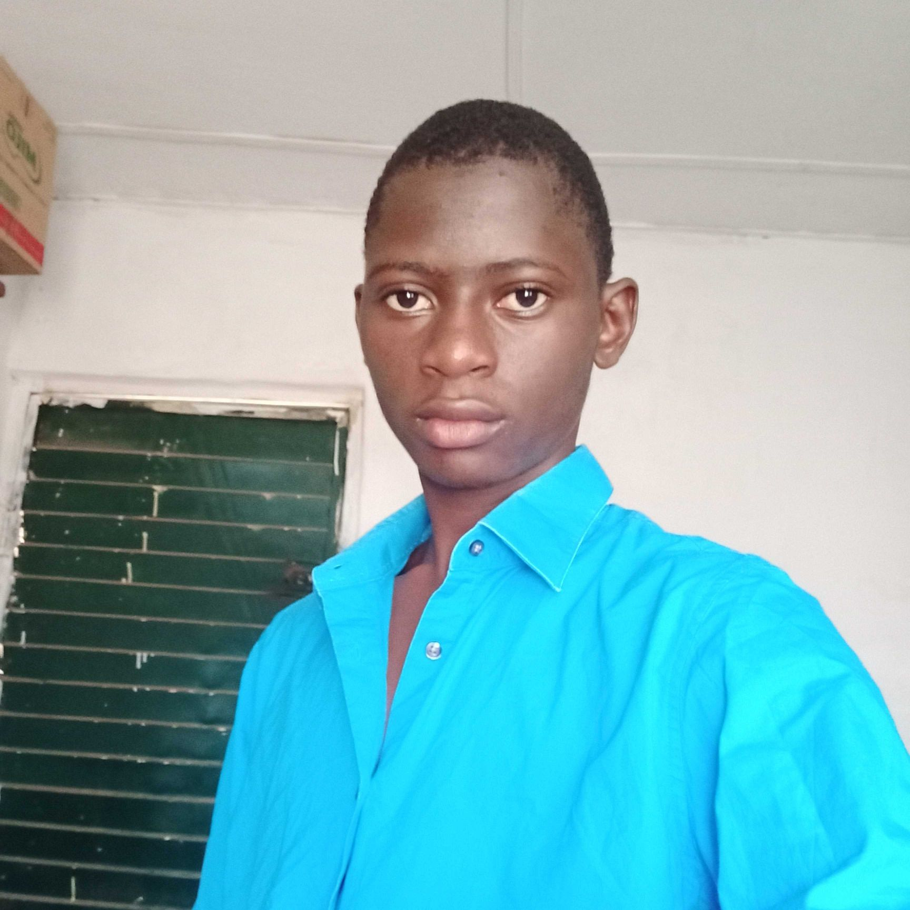

About Us
Web Apps
From the very beginning of Laravel, I've had this idea that all people want to feel like they are part of something. It's a natural Human instinct to want to belong and be accepted into a group of other like-minded people So, By injecting personality into a web framework and being really active with the communityemphasized. that type of feeling can grow in the community. _ Taylor Otwell, Product and Support interview laravel
Mobile Apps
There are two main types of mobile apps: native apps, developed specifically for a particular platform, and hybrid apps, built using web technologies and run on multiple platforms. The process of developing a mobile app involves several steps, including ideation, design, development, testing, and deployment, and requires a deep understanding of the platform, user experience, and app architecture. Mobile apps have greatly changed the way we interact with technology and are used by billions of people worldwide..
Industrial Design
Industrial design is a multidisciplinary field that focuses on the design and development of products and systems for the manufacturing industry. It combines elements of engineering, ergonomics, aesthetics, and human-centered design to create functional and visually appealing products. The goal of industrial design is to create products that meet the needs and expectations of users while also being efficient to manufacture and easy to use. This involves conducting research, prototyping, testing, and refining designs to ensure that the final product is both functional and aesthetically pleasing.
Feature Integration
Feature integration refers to the process of adding new features or functionality to an existing product or system. The goal of feature integration is to enhance the user experience and provide additional value to the end-user. In software development, feature integration can involve adding new features to an existing software application or integrating with external systems to provide new functionality. This can involve adding new functionalities such as additional payment options, enhanced security features, or new user interface elements.
Lists
Why Choose Okefoma LLC
- Highly Skilled Flutter Dev.
- Highly Skilled React Native Dev.
- Agile and module base approach.
- Can handle simple to complex level project.
- Improve Costumer Services.
InBox Us
- salimansas2017@gmail.com.
- info@okefoma.com.
Follow Us On Youtube
Core idea I believes in :)
 Career and business is my passion! I'm a driven business owner dedicate to providing product service relevance to audience in the marketplace. my greatest strength are programming, analytical problem solving, business strategies, and finding solutions to business related problems and networking collaboration!
 I'm not here to be small, to compare, to judge(myself or you), to fit in or to be perfect. I'm here to grow, to learn, to love, to be human. I'm here to be me, to be content, to be happy, to be grateful, and to be thankful to the moments that i have experienced in the past and to the moments that i am going to experience in the future.